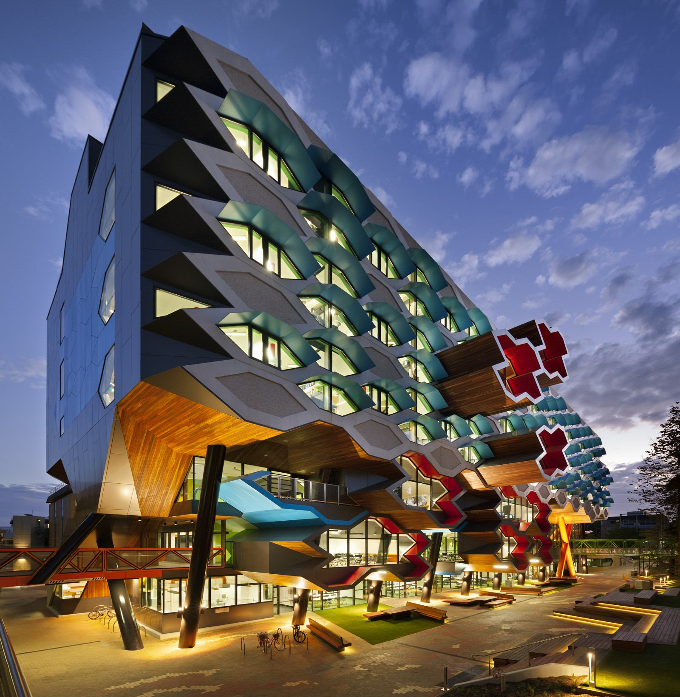

Agora

The Agora is the central meeting place on campus. You'll find plenty of cafés and takeaway restuarants, a grocery store, post office and even a hairdresser. It's the perfect place to grab your morning cofee or catch up with a friend for lunch. The Agora is also home to the library and ASK La Trobe.
Simpson Lawn

Meet with friends, have a bite to eat in the sun and tke in your surrounds on the beautiful Simpson Lawn. This area is a well-maintained, grassy expanses bordered by the moat and opposite Glenn College. It's just a short work to or from the Agora - the bustling centre of campus.
LIMS Building
lol